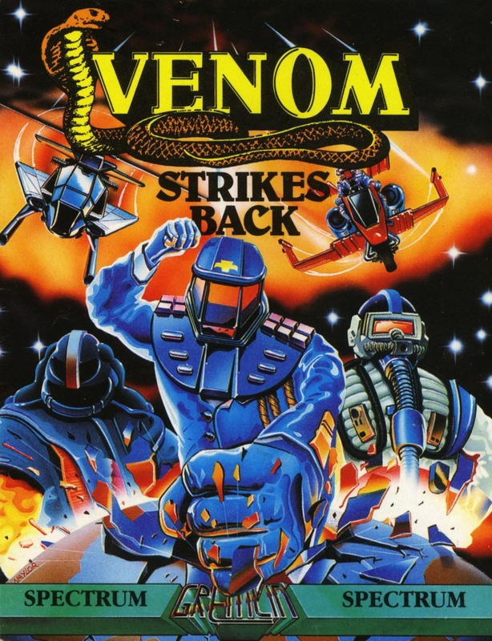
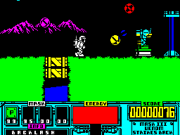
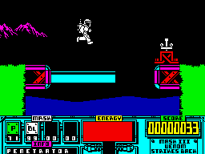
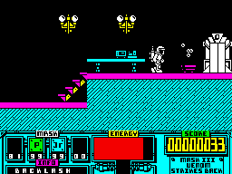

Venom Strikes Back


{kind=link}

| Publisher: | Gremlin Graphics |
| Price: | £8.99 cassette, 12.99 disk |
| Year: | 1988 |
| Source: | CRASH, Issue 53 |

Matt Tracker’s third appearance on the Gremlin label is fraught with personal anxiety. Miles Mayhem has kidnapped his son Scott and is holding him to ransom on the moon. Unless MASK’s entire forces are surrendered to VENOM, Scott is doomed. Matt’s dilemma is a public as well as a private one: if he gives in, VENOM gains total control over the Peaceful Nations Alliance but if he holds out, his son may not survive. The only possible course of action is to orchestrate a clandestine rescue attempt; equipped only with his spacesuit, Matt resolves to undertake the dangerous mission on his own.

Teleporting onto the moon’s surface he begins the perilous journey which is set against a horizontally scrolling lunar landscape of hills, depressions and vast stretches of deadly sea. Purple mountain ranges pucker the horizon while doors occasionally allow entry into inhabited (but mostly deserted) parts of the moon base.
VENOM’s defence systems are on full alert: blockbusters, death-spheres, serpents and angels of death belch out ammunition while surplus projectiles hurtle through the air. Too much contact with enemy fire and Matt’s energy level is radically decreased. Should his energy counter fall to zero his mission is prematurely aborted.

another intrepid expedition
As he approaches the nerve centre of VENOM’s base and attempts to gain control of an enemy craft, Matt encounters supplies of four different types of protective mask which are accessed via the keyboard. Selective use of each of their properties dramatically improves his chances of success. The Penetrator temporarily dematerialises the body, allowing it to pass through solid objects, while the buoyant qualities of the Jackrabbit mask are particularly useful when negotiating long stretches of sea. Masks are collected in boxes of 99 units which count down as they are used.
Status displays show score, energy meter and current status of masks, while a scrolling message provides extra information where necessary.
As each level is completed, Matt decodes the password to the next. Typing this in at the beginning of a game unlocks the teleport gate to the appropriate level and another desperate attempt to rescue Scott.
CRITICISM

son, Scott?
“Every game in the MASK series is an improvement over the last — and VENOM Strikes Back is definitely the best of the cartoon-based series. What’s most impressive to me is the way that each game differs tremendously from every other — unlike, for example, the Renegade series — but each still ties in strongly with the base subject of the TV programme. The latest in the series is superbly presented but also contains a playable and addictive game. The graphics are, without a doubt, the most impressive part of the game. Apart from being amazingly colourful and intricately detailed they’re also superbly animated — which, when you take a look at the amount that’s moving, is pretty impressive. But there’s more to it than that: it requires a great deal of thought, planning and strategy if you’re to get anywhere with it. The MASK series must be a real collector’s pack now — all three are well worth getting — but VENOM Strikes Back is simply the icing on the cake.”
PAUL ... 91%
“Gremlin strike back with a vengeance! Graphically, MASK II was a definite improvement on MASK I; the sequel to the sequel goes one further in its excellent use of colour and detail. Matt Tracker is cutely animated, even down to the rhythmic turning of his head as he bounds along the moon’s bright surface. Gameplay, very much in the style of Exolon and Yeti has the added bonus of freedom of movement; you can usually jump back into the screen you’ve just left, avoiding a VENOMous onslaught of enemy fire. The complexity of the unfamiliar lunar terrain and the properties of the different masks ensure plentiful variety. Learning when and where to use each mask is an addictive process of trial and error; there’s nothing like a premature plunge into the sea or a sudden untimely re-materialisation to keep you going back for more. Scrolling is smooth, collision detection is accurate and control is surprisingly fast. It all contributes to a polished, sophisticated and extremely compelling arcade adventure. Ignore it at your peril!”
KATI ... 90%
“VENOM is definitely striking back with this great new addictive game from Gremlin. It’s basically just a horizontally scrolling shoot em up but it’s just packed full of detailed graphics and challenging puzzles that will have you glued to your screen for hours. Right from the start of the game you’re confronted a variety of nasties that all have their own way of destroying you. Once you’ve memorised the attack patterns then the game does get a bit easier and you can get further. I loved the way that once you enter a password you can go to that level through one of the four transporters. It saves a lot of time and stops the first few levels getting monotonous. Every screen is full of excellently designed objects and characters, all on an atmospheric background of moons and mountains. The animation on each screen adds a dimension of realism with rippling water and pretty detail! Brilliant colour, fantastic sound and there’s even a good game in there somewhere. VENOM Strikes Back is another great game in the MASK series.”
NICK ... 91%
COMMENTS
| Joystick: | Cursor, Kempston, Sinclair |
| Graphics: | A superb range of colourful and detailed characters with a wide range of realistic and animated backgrounds |
| Sound: | Great title tune from Benn, with above average spot effects |
| Options: | Definable keys |
| General rating: | The superb presentation enhances a very playable and addictive game. VENOM Strikes Back will appeal to adventure and shoot ’em up fans alike |
| Presentation: | 93% |
| Graphics: | 93% |
| Playability: | 90% |
| Addictive qualities: | 91% |
| Overall: | 91% |